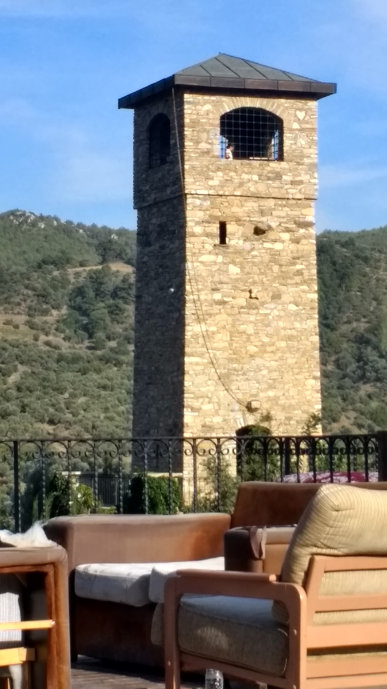

July 30 - August 5
Nesin Mathematics Village, Selçuk, İzmir, Turkey
This is a one week workshop on automorphic forms. The participants are expected to collaborate in the wider area of automorphic forms and L-functions. On the first day we have scheduled pitches for topics to work on in the general area of automorphic forms and analytic number theory. For the rest of the week, the participants will join groups and work on various projects. On Saturday there will be progress reports from the groups and they will lay out a plan for completing the project.
Location and TravelThe workshop is on the beautiful premises of Nesin Mathematics Village, which provides a peaceful and idyllic location for this workshop. Participants should arrive a day before on Sunday July 29 to İzmir. For information for how to reach the village from the İzmir airport, please see the arrival page here. Participants |
A HaikuFront desk moves you outAt the Grand Hilbert Hotel For each newcomer. |
Organizer's Contact Information
Dr. E. Mehmet Kıral: erenmehmetkiral@protonmail.com
Dr. Thomas A. Hulse: thomas.hulse@morgan.edu
Dr. Chan Ieong Kuan: kuanchi3@mail.sysu.edu.cn